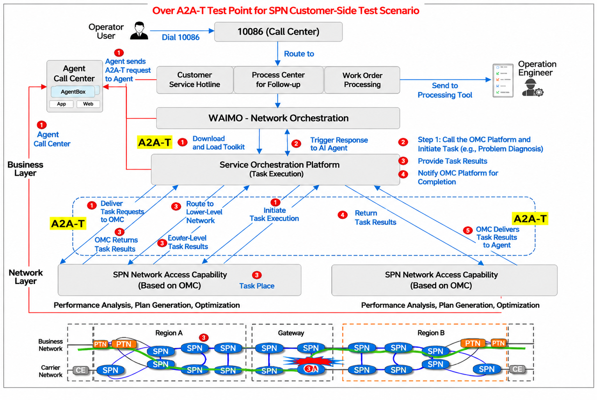
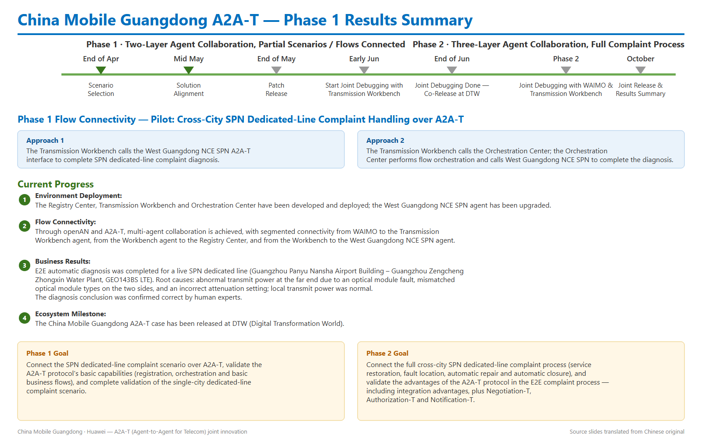
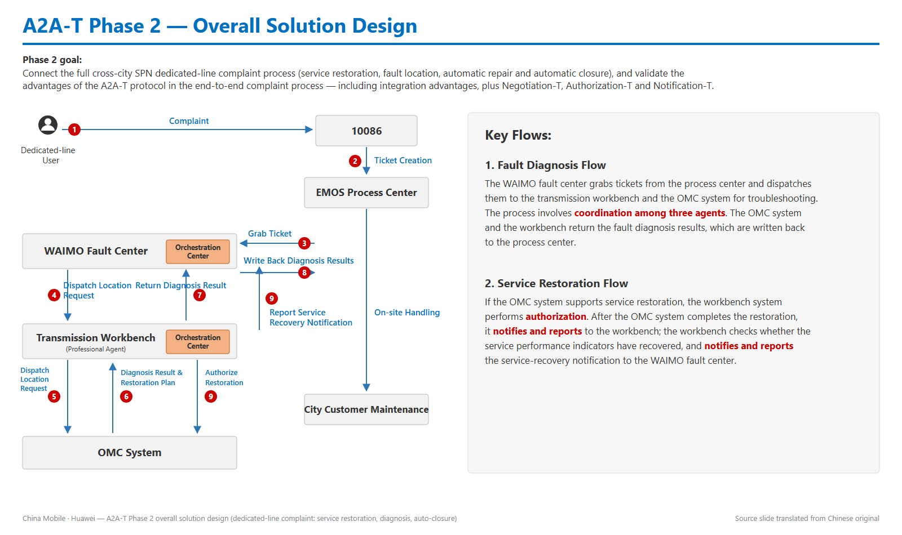
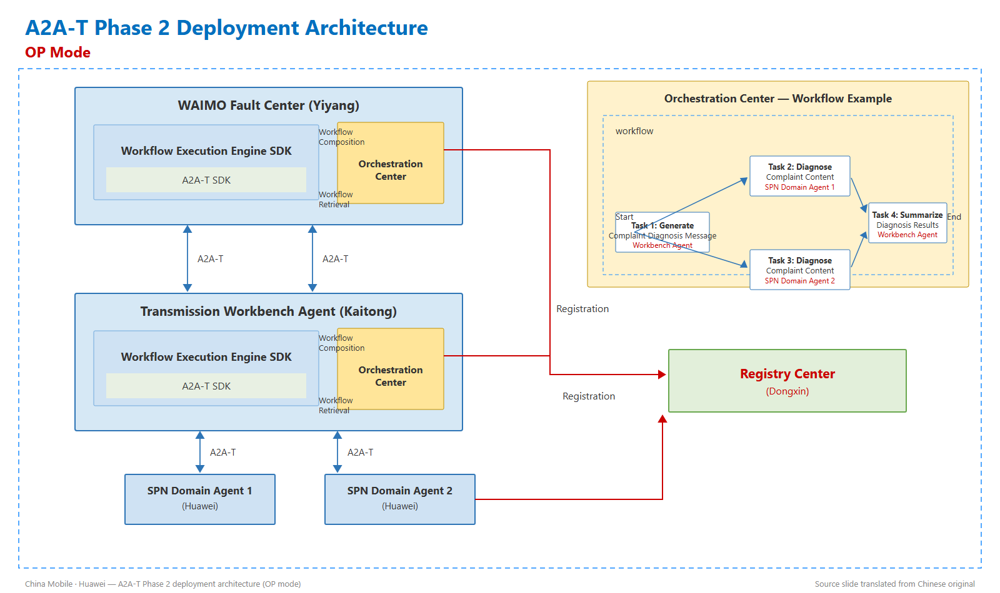
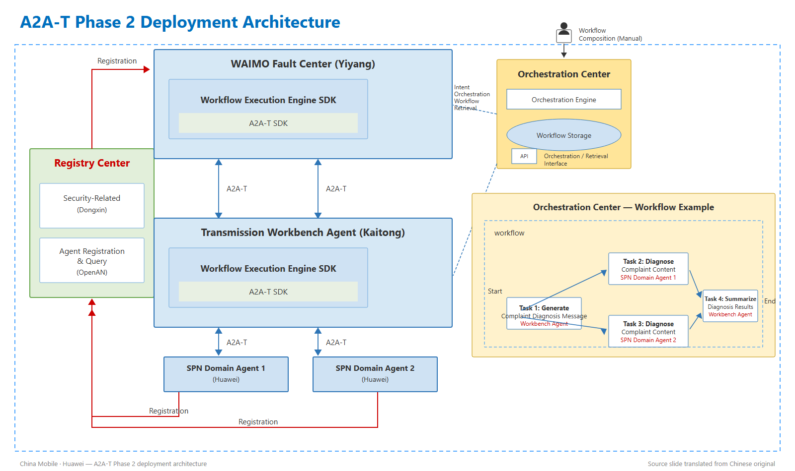

Phase 1 validated the A2A-T protocol with live-network dedicated-line diagnosis · Phase 2 will connect the full end-to-end complaint process
China Mobile Guangdong and Huawei are jointly innovating on the A2A-T (Agent-to-Agent for Telecom) protocol — built on the OpenAN framework — to bring multi-agent collaboration into transmission-network operations. The pilot scenario is the SPN (Slicing Packet Network) dedicated-line complaint: when an enterprise customer's dedicated line degrades or fails, the complaint flows through the 10086 call center and the EMOS process center to the transmission workbench, and multiple agents must collaborate to locate and restore the fault.
The joint innovation runs in two phases: Phase 1 connects the single-city complaint diagnosis scenario and validates the A2A-T protocol's basic capabilities; Phase 2 connects the full cross-city complaint process — service restoration, fault location, automatic repair and automatic closure — and validates the protocol's advanced capabilities, including Negotiation-T, Authorization-T and Notification-T.
The Phase 1 results were co-released by China Mobile Guangdong and Huawei at DTW (Digital Transformation World).
Phase 1 ran from April to June: scenario selection, solution alignment, patch release, and joint debugging with the transmission workbench — completed with a co-release at DTW. The goal was to connect the SPN dedicated-line complaint scenario over A2A-T, validate the protocol's basic capabilities (registration, orchestration and basic business flows), and complete single-city scenario validation.


The headline business result of Phase 1: end-to-end automatic diagnosis was completed for a live SPN dedicated line running between the Guangzhou Panyu Nansha Airport Building and the Guangzhou Zengcheng Zhongxin Water Plant (GEO143BS LTE). The A2A-T agent collaboration identified the root causes — abnormal transmit power at the far end caused by an optical module fault, mismatched optical module types on the two sides, and an incorrect attenuation setting — while confirming local transmit power was normal. The diagnosis conclusion was confirmed correct by human experts.
Phase 2 targets the full cross-city SPN dedicated-line complaint process — service restoration, fault diagnosis, automatic repair and automatic closure — with joint debugging between WAIMO and the transmission workbench, leading to a joint release and results summary in October. The focus is on validating the A2A-T protocol's advantages in the end-to-end complaint flow: integration advantages, plus Negotiation-T, Authorization-T and Notification-T.

The deployment brings together agents from multiple vendors over the A2A-T SDK: the WAIMO fault center agent (Yiyang) and the transmission workbench agent (Kaitong) each embed the workflow execution engine SDK with the A2A-T SDK, and collaborate downward with two SPN domain agents (Huawei). All agents register with the Registry Center, while the orchestration center composes and retrieves workflows — for example: generate a complaint diagnosis message, diagnose the complaint content in parallel with two SPN domain agents, and summarize the diagnosis results.


Ticket analysis across the province (March–May) shows Guangzhou handles about 38 SPN complaint tickets per month with an average handling time of 2.2 hours; roughly 90% of root causes are customer-side issues, with most of the rest being network-side line problems — a pattern well suited to agent-automated diagnosis and restoration.
From validating basic protocol capabilities on a single-city scenario, to connecting the full cross-city complaint process with negotiation, authorization and notification, China Mobile Guangdong and Huawei are advancing the A2A-T protocol — and the OpenAN framework beneath it — from technology validation toward production-grade, multi-vendor autonomous collaboration. The Phase 2 joint release is planned for October.